本文介绍了几种优化 webpack 构建速度的方式。
多进程
优化构建速度，可以通过多进程/多线程同时构建的方式来进行优化，目前主要有 Happypack / thread-loader / parallel-webpack 这几个解决方案。本文主要介绍了前两种方案。
优化前的构建速度：
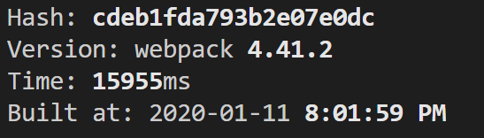
使用 Happypack
原理
happypack 会创建一个线程池，线程池会将构建任务里面的模块分配到不同线程上，各线程会去处理这个模块及其依赖。处理完成后，会将处理完成的资源传输给 happypack 的主进程，然后完成整个构建任务。参见下图：
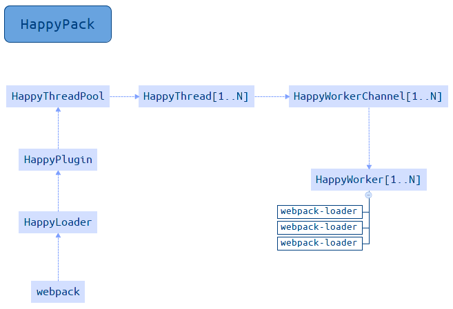
安装及使用
安装：
1 | npm i happypack -D |
使用：
1 | // webpack.config.js |
使用后构建速度：
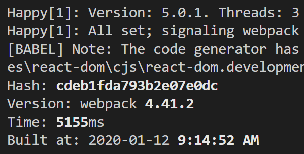
可以看到，happypack 开启了三个线程进行构建，大幅度地缩减了构建时间。
thread-loader
原理
thread-loader 的原理与 happypack 类似，也是创建一个线程池，线程池会将构建任务里面的模块分配到不同线程上，各线程会去处理这个模块及其依赖。处理完成后，会将处理完成的资源传输给主进程，然后完成整个构建任务。
安装及使用
安装：
1 | npm i thread-loader -D |
使用：
1 | // webpack.config.js |
使用后构建速度：
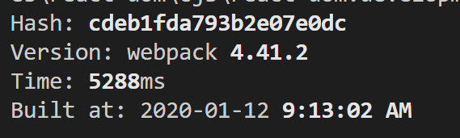
可以看到，thread-loader 使用后也大幅度地缩减了构建时间。
多进程并行压缩
并行压缩代码，有两种方式：
- 使用 parallel-uglify-plugin 插件
- 使用 terser-webpack-plugin 开启 parallel 参数
使用 parallel-uglify-plugin 插件
1 | // webpack.config.js |
使用 terser-webpack-plugin 开启 parallel 参数
1 | // webpack.config.js |
缓存
缓存对于首次构建并没有什么帮助，但是，可以充分利用缓存，提升二次构建的速度。
开启缓存有三种方式：
- babel-loader 开启缓存 – bebal 转换 js 的时候的缓存
- terser-webpack-plugin 开启缓存 – 代码压缩阶段的缓存
- 使用 hard-source-webpack-plugin – 模块转换阶段的缓存
缓存的存储位置位于 ./node-modules/.cache 。
babel-loader 缓存
设置 babel-loader 的 cacheDirectory 选项为 true，即可开启缓存：
1 | module: { |
第一次构建：
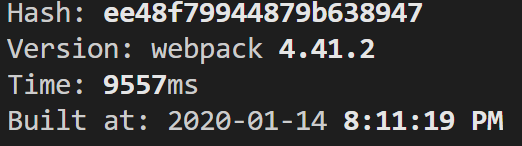
第二次构建：
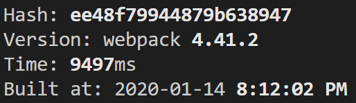
可以看到，开启缓存后，有小幅度优化。
terser-webpack-plugin 缓存
设置 TerserPlugin 的 cache 选项为 true，即可开启缓存：
1 | optimization: { |
第一次构建：
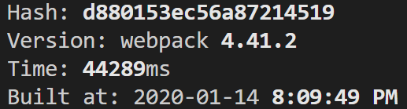
第二次构建：
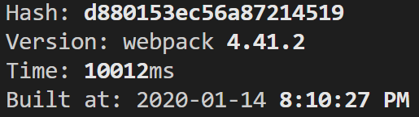
可以看到，开启缓存后，优化效果明显。
hard-source-webpack-plugin 缓存
添加插件 hard-source-webpack-plugin 即可开启缓存：
1 | plugins: [ |
第一次构建：
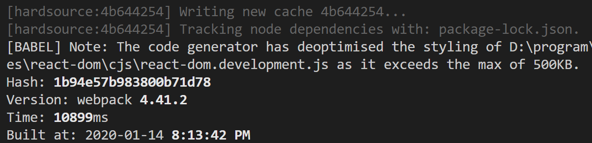
第二次构建：
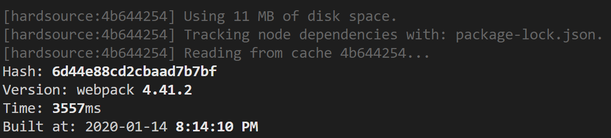
可以看到，开启缓存后，优化效果明显。
预编译资源模块
- 在
npm run build构建之前，先把一些基础包和业务包打包成一个文件 - 使用
DllPlugin进行分包 DllPlugin把基础包打包成一个文件，然后全局暴露一个变量，需要在 html 引入进来DllPlugin中的options[name]要和output[library]对应起来，不然会报一个引用错误- 通过引入
add-asset-html-webpack-plugin把已经打包的 js，通过 html 引入。注意不要和SpeedMeasurePlugin同时使用，会出错
1 | // webpack.dll.js -- 打包成 dll |
1 | // webpack.config.js -- 使用 dll |
使用前：
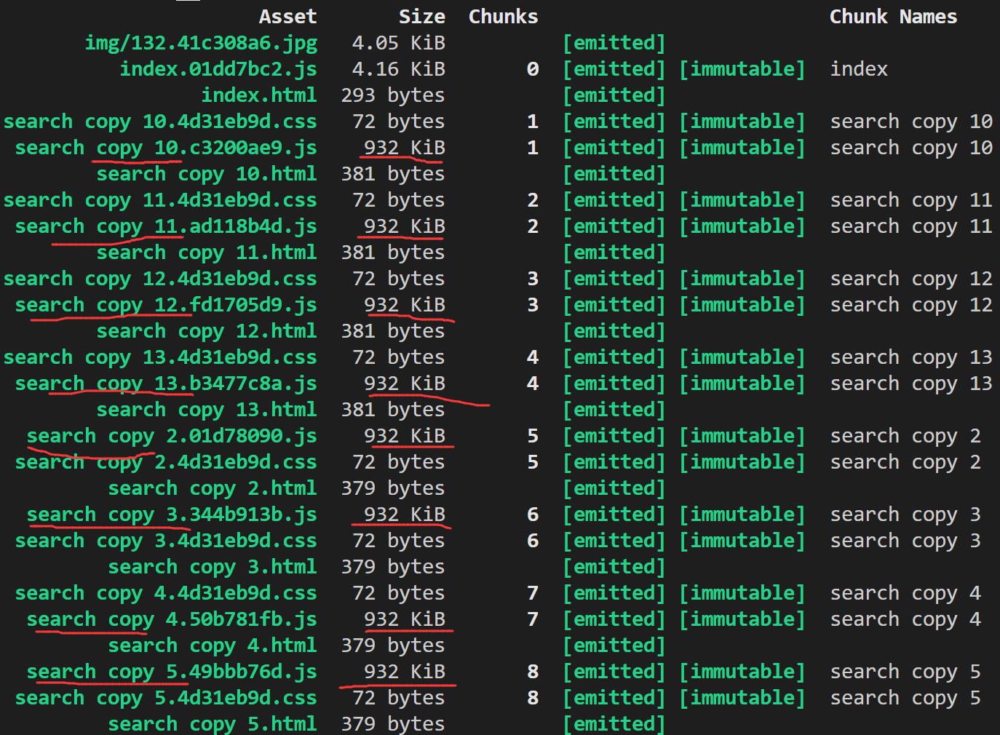
使用后：
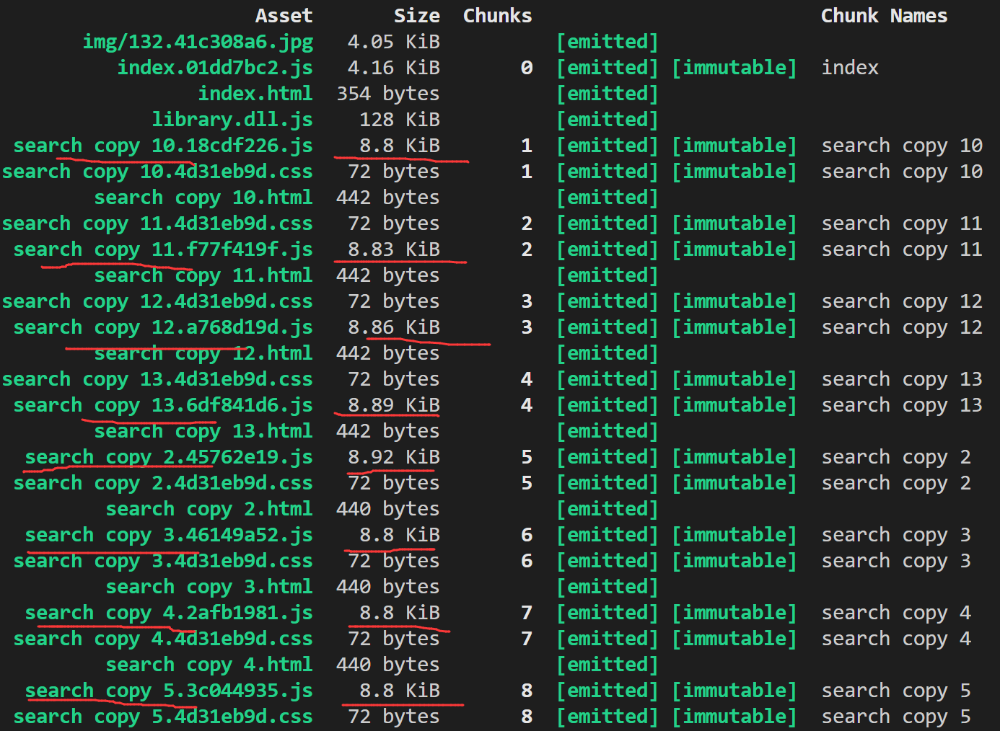
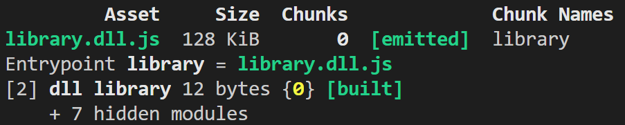
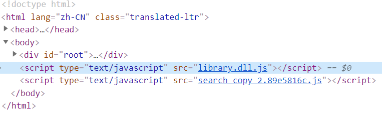
可以看到，构建体积明显小了很多。
缩小构建目标
可以通过减少构建的模块，来使构建速度得到一定的优化，比如 babel-loader 不解析 node_modules：
1 | module.exports = { |
减少文件搜索范围
webpack 在解析文件时，会逐层往上找，比如 require('react') ，会先搜索当前目录下是否存在 react.js/.json 等文件，没找到的话，再到 node_modules 及上层目录中找，较为耗时。
因此，可以指定搜索范围来减少这种不必要的搜索。主要有以下4点：
- 优化
resolve.modules配置：指定模块查找位置 - 优化
resolve.mainFileds配置：模块入口文件字段 - 优化
resolve.extensions配置：缺少扩展名时，尝试补齐的文件类型 - 使用
alias：模块位置
如：
1 | // webpack.config.js |